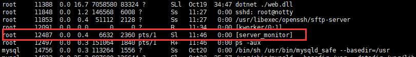
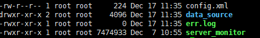
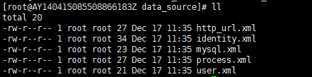
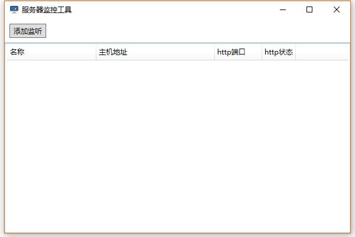
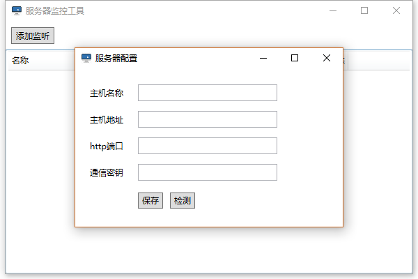
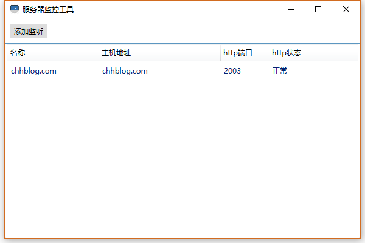
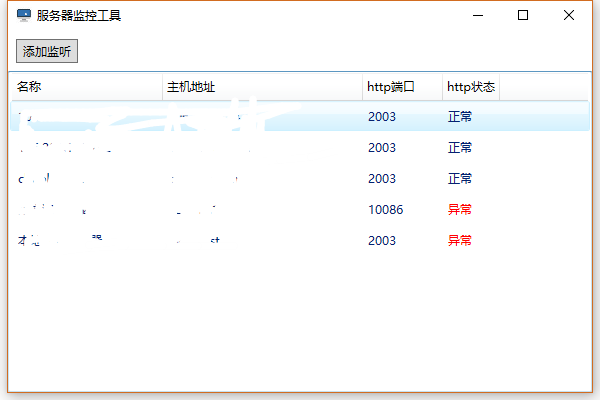
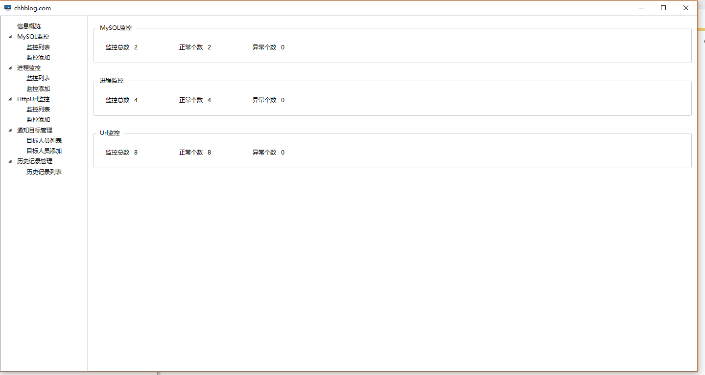
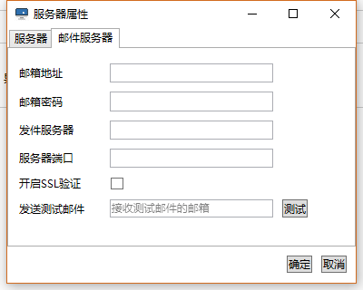
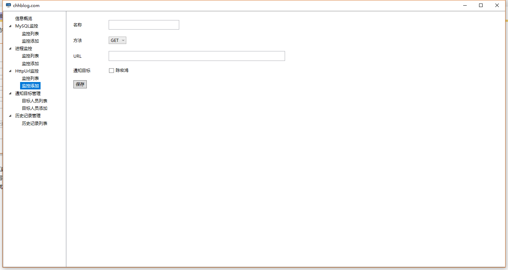

系统可用性监控工具
1、概述
开发这个工具的初衷是因为自己工作的需要， 我的工作涉及到管理和维护许多网站和Web服务， 这些系统在线上跑，隔三差五总要出点故障，我们事先通常无法得知故障发生，而是需要通过用户反馈， 这很不好， 也许在我们知道这个故障前， 已经有很多用户受到了影响，那个反馈的用户不会是第一个受到影响的用户。
我们急需一种机制，可以迅速的监听到我们的系统发生的故障和引起这些故障的原因，一般包括网站突然无法访问或者访问出错、网站的数据库连接失败、服务器上的进程突然挂掉等问题。 如果这种机制能迅速监听到这些问题，并通知相关人员及时处理解决，那么将很大范围的缩小受影响的用户范围。
这套系统就是为了解决这个问题而被开发出来的。
系统在早期是为了解决我们部门的一个需求，也就是前面提到的迅速发现问题的机制。但是这个项目的开发并不成功，虽然开发完成了，但最终的成果并不好用， 系统也没有实际投入使用，问题没有被解决，后来这个事情就被搁置了。
之后我觉得有必要解决这个悬而未决的问题，于是我重新规划了这套系统的设计，去除之前需求中一些虚无缥缈华丽且实际意义不明显的功能，增强了基础常用的功能，改变技术架构，推倒重来，完全实现一套全新的系统。
对于这套系统， 我并没有把它纳入公司的项目，开发期间也没有占用公司的资源，因为我觉得这套系统解决的问题并不仅仅是我们公司的业务需求，它是存在于挨踢互联网行业的一个广泛性的问题， 我打算开源这套系统，因此也没好意思让同事帮忙，也不能占用工作时间来开发。
这套系统的运行原理很简单，在服务器上运行一个程序， 定时，一般是三十秒，检测服务器的进程、数据库连接、模拟http请求判断返回的状态码， 一旦发现异常，就往事先设定的电子邮箱发送一封邮件告警，通知相关人员及时处理。 在这个基础上， 再做进一步的功能扩展。
2、核心功能
这套系统主要实现三个功能
2.1、检测服务器进程是否崩溃
进程崩溃不常见，但并不意味着没有，在服务器运行的过程中，某些软件程序出现过载或者其它未知的意外，就会导致进程崩溃，从而另依赖这些软件的程序系统无法正常运行。进程崩溃概率极低，但是对业务的伤害最大，一旦进程崩溃，就意味着系统彻底瘫痪， 因此实时的监控非常有必要。 虽然对于进程的监控在服务器运维行业已经有很成熟的方案，但我还是决定将它集成到这套系统之中，算是一个附加功能吧。
2.2、检测服务器的MySQL访问是否正常
服务器访问MySQL是否正常的检测非常有必要。 将程序和数据库放在同一台机器上运行的情况并不常见，通常会有程序服务器（Web服务器）和数据库服务器之分，将程序和数据库分开放置即是为性能考虑也是为管理方便考虑。但是分开防止也会导致一些副作用的出现， 比说服务器之间的网络传输问题，当业务复杂到一定的程度， Web服务器和数据库服务器隔个十万八千里也不是没有可能，两地之间的网络一旦不稳定就会导致数据库访问失败、程序出错，毫无疑问这类问题需要及时发现。 再比如说一些数据库访问权限问题、数据库服务器访问端口问题，都会不可避免的因为各种原因出现，偶尔， 系统总会因为这种问题而出错。 因为无法避免，所以我们需要及时发现以减少损失。
2.3、检测网站的URL请求是否正常
其实这个功能的执行并不一定需要指定特定的服务器，可以在任何联网的服务器或者PC机上运行，毕竟只是检测http请求是否通畅，放在哪里都是可以的。
这个功能是最主要最常用的，因为网站的访问是否正常才是一切的关键，是所有的核心，即使服务器正常、数据库正常，如果网站的访问不正常，也就都失去了意义。 换句话说， 进程监控和MySQL监控只是另一种形式的网站监控而已。
除了Web服务，网站都是直接面对用户的，出了问题直接影响到用户， 它最容易出问题，也最难监控的到。要说监空到服务器的进程是否正常，运维就能很容易做到。监控MySQL是否访问正常， 尤其是实时监控，就算是DBA也要费点劲了， 而在我们这边出现这种问题都需要开发来排查，非常费劲。 而要实时监控到网站是否正常，运维办不到、开发也办不到，很多时候都是要靠用户，请原谅我们的不专业，所以我要开发这套系统来解决问题。
这个URL的检测功能很大程度上能做到这件事情，程序会定时模拟浏览器访问事先配置好的网站URL，24小时不休息，一旦发现异常就会发邮件报警，呼叫程序员排查问题。
3、运行原理
这套系统有两部分组成，一部分是运行在服务器上的程序，也就是进行状态检测、邮件发送的程序。 另一部分是和这个服务器上运行的程序相对应的客户端，用来展示相关监测数据和配置检测项目的客户端软件。
3.1、服务器端运行原理
此系统服务器端是一个可执行文件， 由golang写成，除了glibc，不依赖任何其它第三方运行时或者库， 同时支持windows 64位和linux 64位双平台。
程序在服务器上被启动后，会开启三条线程，定时进行进程、MySQL数据库、Http URL的可用性检测和通知工作。其中进程可用性的60秒检测一次，MySQL和Http URL可用性30秒检测一次。 而被检测的进程、MySQL连接字符串、http URL存储在程序所依赖的配置文件里面，配置文件以xml的格式存放。但是这个配置文件并不需要我们手动配置，我们可以使用此系统客户端提供的用户界面程序生成配置文件，不需要了解配置文件的具体格式。检测的过程分别如下
3.1.1、进程检测
1. 程序读取配置文件中MySQL连接字符串
2. 程序通过连接字符串创建MySQL连接
3. 假如创建成功则等待下一次检测时间的到来， 继续检测
4. 假如创建失败， 则再连续创建二次连接， 如果之后的二次都失败了，则发邮件报警。为什么第一次创建失败后还要连续创建两次？主要是为了确认是否真的失败了，换句话说就是这个被检测的MySQL服务器是否真的存在问题，因为很多时候MySQL连接创建失败并不一定完全是MySQL服务器的问题，也有可能是其它未知的原因。如果成功，则退出这个确认的过程，继续等待下一次检测 之后的检测假如异常仍旧存在则不继续报警，如果异常消失了则向指定的邮箱发送一封邮件， 告知相关人员异常已恢复
3.1.2、MySQL可用性检测
1. 程序读取配置文件中MySQL连接字符串
2. 程序通过连接字符串创建MySQL连接
3. 假如创建成功则等待下一次检测时间的到来， 继续检测
4. 假如创建失败， 则再连续创建二次连接， 如果之后的二次都失败了，则发邮件报警。为什么第一次创建失败后还要连续创建两次？主要是为了确认是否真的失败了，换句话说就是这个被检测的MySQL服务器是否真的存在问题，因为很多时候MySQL连接创建失败并不一定完全是MySQL服务器的问题，也有可能是其它未知的原因。如果成功，则退出这个确认的过程，继续等待下一次检测 之后的检测假如异常仍旧存在则不继续报警，如果异常消失了则向指定的邮箱发送一封邮件， 告知相关人员异常已恢复
3.1.3、HttpURL可用性检测
1. 程序读取配置文件中的URL地址
2. 程序向目标URL发送一个Head请求，因为URL检测主要是为了确认URL访问是否正常，而请求响应的头部信息已经能满足需求， 请求响应的内容不是必要的，所以为了提升检测的性能，将GET方法换成Head方法。至于POST请求的检测，则仍旧使用POST方法。
3. 假如请求返回的状态码是200+或者300+则表示URL能正常访问，因此继续等待下一次检测
4. 假如请求返回状态码是400+或则500+亦或者连接失败， 则表示URL不可用，接下来进入确认过程， 连续发送两次请求，如果其中有一次正常，则表示放弃之前异常的检测结果，继续等待下一次检测。 如果异常仍旧存在，则发送告警邮件 之后的检测假如异常仍旧存在则不继续报警，如果异常消失了则向指定的邮箱发送一封邮件， 告知相关人员异常已恢复
3.2、客户端运行原理
客户端的主要功能是配置服务器端监控的进程、MySQL、Http URL相关信息，也就是说客户端是一个图形化的配置管理工具，并不是不可或缺的， 就像使用MySQL时，navicat之类的客户端管理工具也不是必须的，但它可以方便你的操作，提升你的效率。
客户端是用Windows Presentation Foundation（WPF）写成，因此只能运行在带有.net framework3.5以上的windows操作系统上面。 至于为什么不把这个客户端做成web的模式？ 首先， web程序运行需要先部署，而客户端直接下载就可以使用。其次，客户端的用户体验和操作遍历性要胜过web。所以我用windows客户端技术实现了这个程序的客户端。
服务器端部分除了检测工作以外，还有web服务的功能，它在启动时会监听一个端口，把自己作为一个http server，并且提供一组web接口，这组接口就是用来操作进程、MySQL、Http URL监控相关的配置文件的。 客户端就是使用这组接口与服务器端通信，管理配置文件。
客户端和服务器是一对多的关系，一个客户端可以管理多个服务器， 这跟我们平常使用的MySQL客户端navicat或者linux终端xshell、FTP客户端FlashFxp之类的软件是同样的模式。
客户端与服务器之间的数据通信需要以某种方式握手认证，除非获得服务器端的密钥和加密算法的过程， 否者无法从服务器端获得到数据，也无法发送命令给服务器执行任何功能。
4、服务器端程序使用方法
服务器程序有两个版本，linux64位和windows 64位。 我们重点讲解linux版本的使用方法，windows因为是图形化界面，所以操作方法稍有不， 但是本质上没有区别。
4.1、在linux机器上部署程序的方法
程序是用go语言开发的，编译出来的就是二进制的机器语言包，不依赖任何运行时。
程序只有一个文件，将它下载后，上传至服务器的某个特定目录下，给755或者777权限
chmod 755 server_monitor
server_monitor是程序的文件名， 文件名可以更改， 但长度不能超过15个字符。
程序支持3中命令， 分别是start、stop、restart，具体作用就是命令名称的含义。
命令执行方法如下
./server_monitor start
./server_monitor stop
./server_monitor restart
在执行start命令启动程序时， 命令行会先后提示输入端口号和密钥
前文提到过我，程序在执行相关检测的同时，还会提供一个web服务， 提供管理配置文件的web接口供客户端使用， 这个端口号就是web服务的端口号。
而与客户端通信的密钥， 则是客户端与服务器通信的凭证，客户端只有通过这串密钥才能访问这个服务器的web接口。 这个密钥其实和密码是同一个东西，起着相同的作用，因此密钥的复杂度也可以参照服务器密码的复杂度来设定。 密钥不能外泄， 不然别人也可以通客户端随意的访问服务器上的监控数据了。
程序启动后， 服务器上便有了它的进程

程序在启动的过程中会自动生成一些列文件

config.xml文件就是用来存储在之前启动程序时输入的端口号要密钥的，那样当第二次启动程序时， 程序会直接读取配置文件中的数据，而不用再次手动输入一遍。config.xml还存放着除监控数据以外的所用程序需要用到的动态信息， 如告警邮箱的邮箱信息、发件服务器地址等等。
data_source目录中的一系列xml文件就是监控数据的配置文件

按照传统的应用系统设计方法，这些文件中的数据会放在关系数据库的数据表中，但是关系数据库的使用依赖与关系数据库软件，而在设计这套系统的首要宗旨就是使用的便利性。 如果要使用这套系统要部署一个MySQL环境，指定访问权限，那显然是违背初衷的。因此我使用xml文件保存数据， 来保证程序使用的简单性， 复杂的数据存储由程序内部实现。
err.log用于存放程序运行时的一些错误日志。再严谨再稳定的程序， 出现错误也是不可避免的，况且， 程序涉及到网络和磁盘等IO操作，而这些都是使程序出错的不确定因素，因此把这些错误记录到日志中还是有必要的。
如果想停止程序， 可以使用stop命令结束，而不必查到程序的进程号再使用kill命令这么麻烦。
如果想不使用程序自带的命令启动程序，比如说nohub的方式， 也是可以的，但是如果不使用start命令启动程序， 也就意味着不能用stop命令结束程序， 也不能使用restart命令重启程序， 因为这些命令是配套的。
4.2、在windows机器上部署的方法
在windows机器上运行的程序被编译成了不带命令行窗口的后台程序，因此也就没有了启动程序时需要输入端口号和密钥的步骤， 但这并不表示windows版本的程序不需要这两样东西。
在windows上运行程序前， 需要通过编辑配置文件的方式指定端口号和密钥，就绪以后，直接鼠标点击程序运行即可。如果在启动程序前没有指定这两个选项或者干脆不指定配置文件，那么程序的运行将出现意外。
至此， 服务器端的一切准备就绪， 但是现在它还是一个空壳子，做不了任何事情，因为相关的监控数据还没有被添加。接下来我们需要使用客户端配置数据。
5、客户端程序的使用方法
5.1、声明
客户端是一个windows桌面应用程序，使用WPF开发， 因为当初开发时完全只是为了满足自己的需求，只考虑了编码的便利性，而没有考虑程序用户的受众范围， 因此使用了一些C#和.net的高级特性，这导致了程序只能运行在.net framework4.5版本或者以上的环境下， windows 7的部分用户可能会无法使用该程序， xp的用户会完全无法使用该程序， 如果这使用这两个系统的用户想使用该程序，则需要先安装.net framework4.5。
不过在之后， 我会逐步改进该客户端， 去除其中的.net高级特性，使其支持.net framework 3.5， 届时windows 7的所用用户都可以使用此程序。
5.2、使用方法
客户端比较轻量级，不是要安装， 下载压缩包， 解压后， 双击其中的
系统可用性监控工具.exe
即可打开客户端
首次打开， 程序的主界面如图

点击左上角「添加监听」按钮， 添加需要监控的服务器的信息， 如图

主机名称可以自己命名， 主机地址就是安装的服务器端程序的机器的地址，可以是IP也可以是域名。
http端口和通信密钥就是启动服务器端程序输入的那两项， 如果忘记了可以去与程序同级目录下的config.xml中查看，填写完成以后， 程序主界面如下图

如果监控了多个服务器， 界面如下图

点击表中的项目，进入服务器监控数据管理的界面。

如果是第一次进入，程序会提示你输入告警邮箱的相关信息。

告警邮箱就是当服务区端程序检测到被监控的项目出现了异常，发邮件通知相关人员使用的邮箱。 告警邮箱数据填写界面中的各项和我们平时使用邮件客户端时填写发件服务器配置信息相同。 填写完毕收一切就已准备就绪。

如图，界面的左侧是功能导航菜单，右侧是功能区。
这些功能其实只是对服务器端监控配置文件的操作和管理而已，服务器读写配置文件通过web服务的形式提供了一系列接口， 客户端提供图形界面给用户，用户填写的数据和操作被客户端转换为对服务器接口的调用， 实现管理配置文件的能力。 如果用户不想使用客户端，在了解服务器配置文件规则的前提下， 也可以手动编辑配置文件， 这和使用客户端操作，达到的效果是相同的。
在通过客户端添加相关监控数据时，需要先在「通知目标管理」中填写当服务器监控到异常时被通知的人的邮箱地址和手机号码。 其实这里手机号码的项目在当前并没有意义，因为程序只支持发送邮件， 不支持发送短信。但是在将来，可能会支持发送短信的功能， 所以在客户端界面上先预留了这个位置。
在「通知目标管理」中添加完数据以后便可以添加监控项目了，在这些监控项目填写表单的最下方，有当监控到异常时需要被通知的目标的选择，「通知目标管理」的意义也在于此。
这些功能的使用非常简单，没有复杂繁琐的操作步骤，通过平时使用软件的经验和直觉便能完成所有任务。
客户多的大多数功能先都被隐藏在右键菜单里
这和我们操作网站系统有点区别，但这却是标准的客户端软件的交互方式，然而我还是要在这里特意提一下。